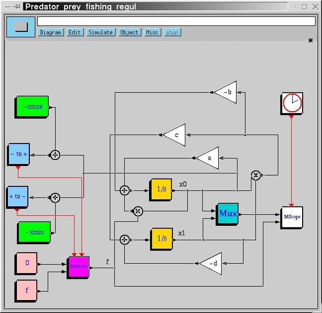
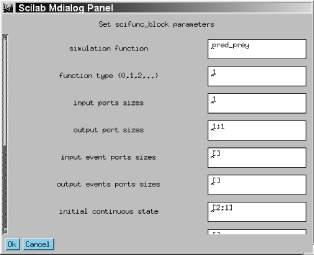
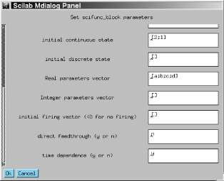
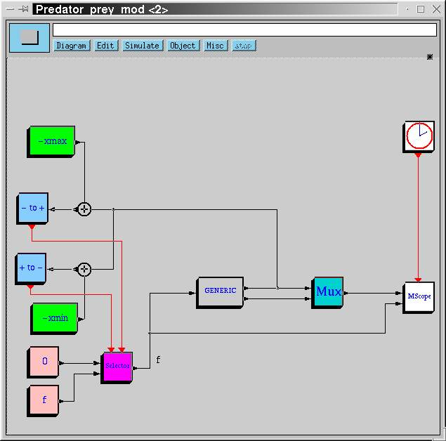
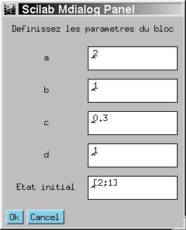

http://www.saphir-control.fr/

| http://www.saphir-control.fr/
|
Zero-crossing et les blocs
utilisés pour le conditionnement d'événements. On a
rarement besoin de définir de nouveaux blocs de tels types.Others on trouve le bloc GENERIC. Ce
bloc a une fonction d'interface générique qui peut être
utilisée dans la plupart des cas pour tester et mettre au point une
fonction de simulation. Cette fonction d'interface suppose cependant que le
dialogue avec l'utilisateur (suite au clic sur le bloc) est
générique : elle propose la possibilité de modifier
tous les paramètres du bloc, même ceux qui ne sont pas
utilisés dans le bloc concerné, et ne fournit presqu'aucun test
de validité sur les réponses de l'utilisateur. Cette fonction
doit être modifiée en particulier pour protéger et informer
les autres utilisateurs de ce bloc qui ne connaîtraient pas
forcément son fonctionnement interne. Nous verrons plus tard sur un
exemple comment cela peut se faire.| Flag | Tâche |
| 0 | Calcul de la dérivée de l'état continu |
| 1 | Calcul des sorties |
| 2 | Mise à jour des états |
| 3 | Calcul des dates des événements de sortie |
| 4 | Initialisation |
| 5 | Terminaison |
| 6 | Ré-initialisation |
| Type de fonction | Scilab | Fortran | C | Commentaires |
| 1 | non | oui | oui | liste d'appel de longueur variable |
| 2 | non | non | oui | liste d'appel de longueur fixe |
| 3 | oui | non | non | les entrées-sorties sont des
list Scilab |
void mafonc(int* flag,int* nevprt,double* t,double* xd,
double* x,int* nx,double* z,int* nz,double* tvec,
int* ntvec,double* rpar,int* nrpar,int* ipar,int* nipar,
double* u1,int* nu1,double* u2,int* nu2,double* y1,int* ny1)
{
................
}
Pour plus d'information sur les arguments de cette fonction voir
Tableau 1.
La fonction de simulation est appelée quand le bloc correspondant est activé. Après les initialisations et au cours de la simulation, cela se produit parce que le bloc reçoit un événement sur l'un de ses ports d'entrées d'événement ou dans le cas d'absence de ce type de port, il hérite d'un événement par l'une ou plusieurs de ses entrées. L'indicateur d'activation indique par quelle voie le bloc a été activé (1 si l'événement d'activation a été reçu sur le premier port d'entrée d'événement, 2 si sur le deuxième, 3 si sur le premier et sur le deuxième simultanément, 4 si sur le troisième, etc...). Le bloc peut aussi être activé sans qu'il reçoive d'événement d'activation s'il a été déclaré comme étant <<temps-dépendant>>, c'est-à-dire actif en permanence. Dans ce cas, l'indicateur d'activation vaut 0.
I/O Args. Description I flag0,1,2,3,4,5 ou 6 I nevprtindicateur d'activation I ttemps O xddérivée de l'état continu I/O xétat continu I nxtaille de xI/O zétat discret I nztaille de zO tvecdates des événements de sorties (pour flag=3)I ntvectaille de tvecI rparparamètres I nrpartaille de rparI iparparamètres I nipartaille de iparI uiiième entrée,i=1,2,..I nuitaille de uiO yjjième sortie,j=1,2,..I nyjtaille de uj
Table 1:
sinus, la fonction n'est appelée qu'une seule fois
avec flag 1. Un bloc contenant un état discret sera aussi
appelé avec flag 2, et si de plus le bloc a des ports de sorties
d'événement, il sera appelé aussi avec flag 3.
L'ordre des appels, dans le cas d'une activation par événement,
est flag 1 suivi par flag 3, et enfin flag 2. Dans le cas
d'activation continue, c'est 1 puis 0. Dans ce cas, presque la moitié des blocs sont utilisés pour implanter le modèle de la population des requins et des sardines : {

Figure 1: Le modèle de la régulation de la population des requins et des sardines de l'article précédent (Linux Magazine 18).
| x0'(t)=a x0(t)-b x0(t)x1(t)+f x0(t) a,b > 0, f<0, |
| x1'(t)=c x0(t)x1(t)-d x1(t) c,d > 0 |
x=(x0,x1) comme état continu et sortie. Les
paramètres seraient
rpar=(a,b,c,d). La fonction de
simulation (en C) pourrait être écrite comme suit :
void pred_prey(int* flag,int* nevprt,double* t,double* xd,
double* x,int* nx,double* z,int* nz,double* tvec,
int* ntvec,double* rpar,int* nrpar,int* ipar,int* nipar,
double* u1,int* nu1,double* y1,int* ny1,double* y2,int* ny2)
{
if (*flag == 1 || *flag == 6) {
/* y=x */
*y1=x[0];
*y2=x[1];
} else if (*flag == 0) {
/* x0d = a*x0-b*x0*x1+f*x0 */
/* x1d = c*x0*x1-d*x1 */
xd[0]=rpar[0]* x[0]-rpar[1]* x[0]* x[1] + *u1* x[0];
xd[1]=rpar[2]* x[0]* x[1]-rpar[3]* x[1];
}
return ;
}
Ce bloc ne sera appelé qu'avec les flags 0, 1, 4, 5 et 6. Pour les
flags 4 et 5, il n'y a clairement rien à faire. Pour les
flags 1 et 6, il faut calculer les sorties, c'est-à-dire
recopier l'état dans les sorties. Enfin, pour le flag 0, il faut
calculer la dérivée de x que l'on place dans
xd (c'est-à-dire x').pred_prey.o), on peut la linker dans Scilab et l'utiliser dans
Scicos. Pour la linker, on utilise la fonction link :
-->link('pred_prey.o','pred_prey','C')
La fonction de simulation pred_prey est maintenant utilisable dans
Scicos pour la construction du bloc Pred-Prey. Il ne nous reste
donc qu'à écrire la fonction d'interface.GENERIC. On commence par supprimer tous les blocs qu'on veut
remplacer dans le diagramme. Puis on copie le bloc GENERIC qui se
trouve dans la palette Others et on le place dans le diagramme. En
cliquant dessus, on ouvre une fenêtre de dialogue qui permet de choisir
ses paramètres (voir les Figures 2 et 3).

Figure 2: Le dialogue du bloc GENERIC : le nom de la fonction de simulation, son type, les tailles et les nombres d'entrées-sorties, etc...
Noter les deux dernières questions. La première concerne l'existence d'une dépendence directe entrée-sortie. Dans ce cas, les sorties x0 et x1 ne dépendent pas directement de l'entrée f (seulement la dérivée de x0 en dépend, on considère cela comme une dépendance indirecte). La deuxième question concerne la propriété de temps-dépendance. La réponse est oui car ce bloc doit être actif en permanence, il n'est pas activé par des signaux d'activation.

Figure 3: Le dialogue du bloc GENERIC (suite).
OK, on constate que le bloc
GENERIC se redessine avec un port d'entrée et deux ports de
sortie. On peut alors brancher les entrées et les sorties pour obtenir
le schéma de la Figure 4. La simulation du nouveau schéma montre qu'il est identique au précédent en fonctionnalité et un peu plus efficace en ce qui concerne la vitesse de simulation.

Figure 4: L'utilisation du bloc GENERIC.
function [x,y,typ]=P_Prey(job,arg1,arg2)
x=[];y=[];typ=[]
select job
case 'plot' then
standard_draw(arg1)
case 'getinputs' then
[x,y,typ]=standard_inputs(arg1)
case 'getoutputs' then
[x,y,typ]=standard_outputs(arg1)
case 'getorigin' then
[x,y]=standard_origin(arg1)
case 'set' then
x=arg1
graphics=arg1(2);model=arg1(3);label=graphics(4)
while %t do
[ok,a,b,c,d,x0,label]=getvalue('Definissez les parametres du bloc',..
['a';'b';'c';'d';'Etat initial'],..
list('vec',1,'vec',1,'vec',1,'vec',1,'vec',2),label)
if ~ok then break,end
if a<0 | b<0 | c<0 | d<0 then
message('les parametres doivent etre positifs')
else
if ok then
graphics(4)=label;
model(6)=x0(:);model(8)=[a;b;c;d];
x(2)=graphics;x(3)=model
break
end
end
end
case 'define' then
x0=[2;1];a=2;b=1;c=.3;d=1; //default
model=list(list('pred_prey',1),1,[1;1],[],[],x0,[],[a;b;c;d],[],..
'r',[],[%f %t],' ',list())
label=[string(a);string(b);string(c);string(d);strcat(sci2exp(x0))]
gr_i=['xstringb(orig(1),orig(2),''Pred_prey'',sz(1),sz(2),''fill'');']
x=standard_define([3 2],model,label,gr_i)
end
On a utilisé ici les fonctions standard pour les cas plot
(dessiner le bloc), getinputs (retourner les coordonnés des
entrées), getoutputs (retourner les coordonnés des
sorties), getorigin (retourner les coordonnés du bloc dans
le schéma). Cela peut se faire pour tous les blocs rectangulaires. Les
cas set et define sont par contre spécifiques.
Le premier gère le dialogue avec l'utilisateur et le deuxième
définit les valeurs initiales des paramètres. list Scilab comme suit :
list('Block',graphics,model,unused,interf_function)
Les variable graphics et model sont aussi des
list. La structure graphique graphics contient des
informations sur l'aspet graphique du bloc comme sa taille, son emplacemement,
son orientation, etc..., et model des informations
nécessaires pour la simulation comme le nom de la fonction de simulation
et son type, les nombres et les tailles des ports d'entrées-sorties, les
valeurs des états, des paramètres, etc... Enfin,
interf_function est une chaîne de caractères Scilab
contenant le nom de la fonction d'interface associée à ce bloc.
model est initialisée dans le cas
define. On constate alors que le nom de la fonction de simulation
est pred_prey, qui est de type 1, que le bloc a une seule
entrée de taille 1 et deux sorties de taille 1 chacune, qu'il
n'a ni entrée, ni sortie de type événement, que son
état continu initial est [2;1], qu'il n'a pas d'état discret,
qu'il a comme paramètre réel le vecteur [2;1;.3;1] et pas de
paramètre entier et qu'il s'agit d'un bloc
<<régulier>>. À noter aussi l'élément
[%f %t] du model de notre exemple qui indique que ce
bloc ne contient pas de dépendence directe entrée-sortie, mais
qu'il est temps-dépendant. Les autres champs sont utilisés pour
la documentation et identification.AddNewBlock du menu Edit. On peut alors remplacer le
bloc GENERIC par ce bloc (Pred_prey). La simulation
donne alors exactement le même résultat qu'avant, mais maintenant
en cliquant sur le bloc on obtient :

<SCI>/macros/scicos_blocks et les fonctions de simulation
dans <SCI>/routines/scicos. Pour plus d'information, en
particulier sur le formalisme de base et le fonctionnement interne de Scicos,
voir http://www-rocq.inria.fr/scilab/doc/scicos_html/.This document was translated from LATEX by HEVEA.